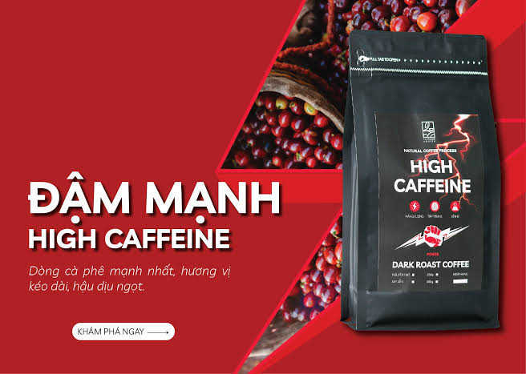
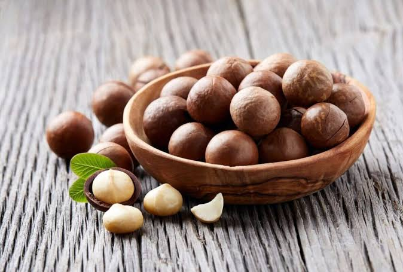
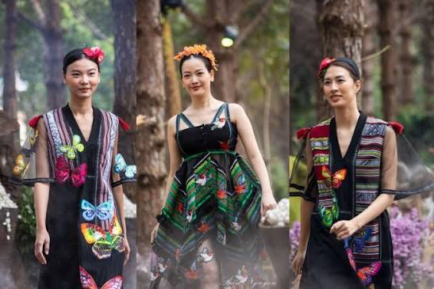

Cà phê Buôn Ma Thuột
Robusta rang mộc, vị đậm, hậu ngọt đặc trưng đất bazan.
Nông sản cao nguyên bazan
Từ những triền đồi bazan đỏ đến gian bếp của bạn — cà phê Buôn Ma Thuột, mật ong rừng, mắc ca và tiêu Đắk Nông được chọn lọc trực tiếp từ nông hộ, giữ trọn hương vị nguyên bản của núi rừng.
Sản phẩm nổi bật
Sáu sản vật tiêu biểu của Tây Nguyên, được bà con thu hái và chế biến theo phương pháp truyền thống.

Robusta rang mộc, vị đậm, hậu ngọt đặc trưng đất bazan.

Khai thác từ rừng khộp tự nhiên, vị ngọt thanh, để lâu không kết tinh.

Hạt to đều, béo bùi, sấy chín tới bằng công nghệ nhiệt thấp.

Câu chuyện vùng miền
Tây Nguyên là vùng đất của cao nguyên đỏ bazan màu mỡ, nơi nắng và mưa phân mùa rõ rệt tạo nên hương vị đặc trưng cho cà phê, hồ tiêu và mắc ca. Mỗi sản phẩm mang theo câu chuyện của những nông hộ người Ê Đê, M'nông, Ba Na đã gắn bó nhiều đời với nương rẫy.
Chúng tôi hợp tác trực tiếp với các hộ trồng trọt tại Buôn Ma Thuột, Đắk Nông và Đắk Lắk, thu mua theo mùa vụ và chế biến ngay tại vùng nguyên liệu để giữ trọn hương vị tự nhiên.
Tìm hiểu sản phẩmCam kết chất lượng
Mỗi lô hàng đều truy xuất được đến vùng trồng và hộ sản xuất cụ thể.
Đóng gói cẩn thận, giao nhanh toàn quốc, kiểm tra hàng trước khi nhận.
Thu mua công bằng, hỗ trợ bà con canh tác bền vững theo mùa vụ.